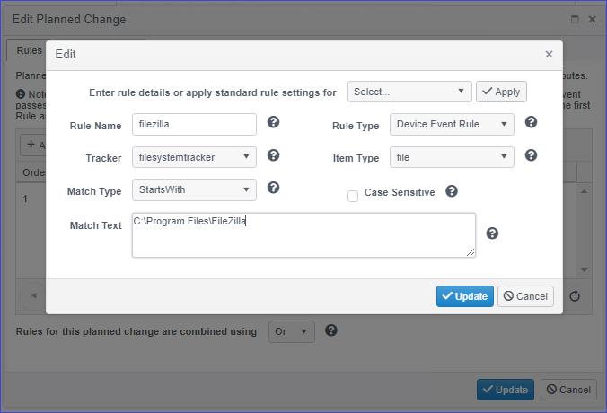
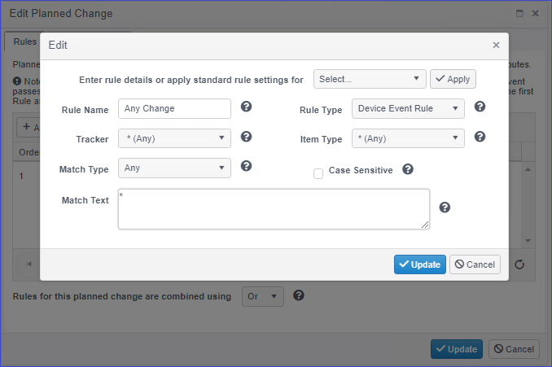
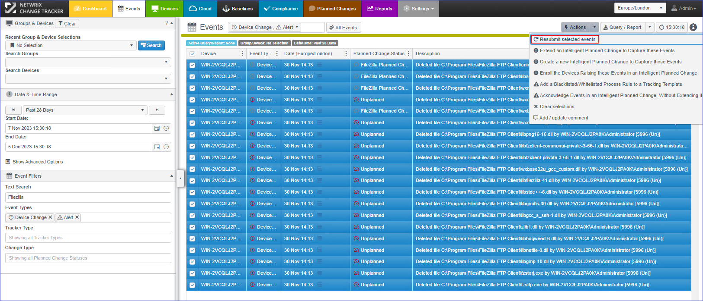
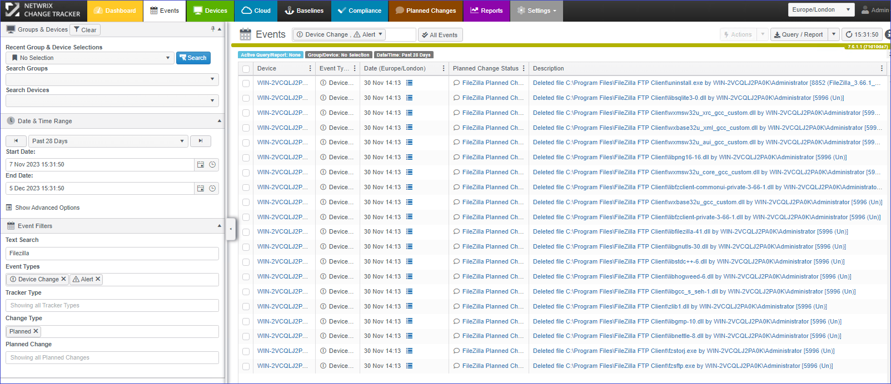

Question
How to resubmit unplanned changes in bulk in Netwrix Change Tracker?
Answer
Create a planned change schedule and resubmit the events. Refer to the following steps:
-
Navigate to the Planned Changes tab and click Actions > Planned Change Wizard.
-
Click Next and proceed with the Create a new Planned Change Rule Set option.
-
In this page, you may create a rule to match all events using Any for all options, or specify a path for the events. Refer to the examples provided below:
-
Planned Change Rule with Specified Path:
 -
Planned Change Rule matching Any events:

-
-
Once the rules are created, click Next and proceed with customizing the planned change.
-
Select the Group of Devices as well as the Date/Time range these events occurred.
-
Once completed, continue through the wizard and customize the name/description.
-
Once completed, continue through the wizard and customize the name and description.
-
After the planned change is created, navigate to the Events tab and filter these events.
-
In this page, you can select the All Events option and click Actions > Resubmit selected events.
Refer to the following screenshot showing resubmitted events verified as a planned change:
